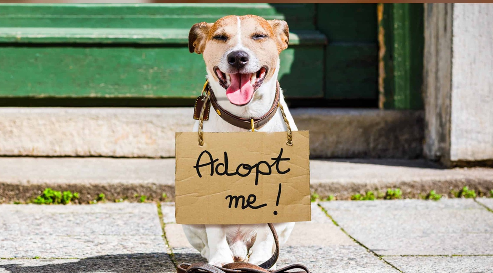

Adopcion de animales
El proyecto de adopción es uno de los pilares más importantes de nuestra organización, porque creemos que cada animal merece un hogar donde pueda sentirse amado, protegido y valorado. Después de su rescate y rehabilitación, trabajamos para que cada uno encuentre una familia responsable que le brinde la vida digna que siempre mereció. Este proceso no solo transforma su futuro, sino que también crea vínculos únicos entre adoptantes y animales que han superado historias difíciles.
Para lograrlo, desarrollamos campañas de adopción periódicas que nos permiten visibilizar a los animales que están listos para encontrar un hogar. Estas campañas incluyen jornadas abiertas, eventos en colaboración con comercios locales, ferias solidarias y acciones comunitarias donde las personas pueden conocer de cerca a los animales disponibles, informarse sobre el proceso de adopción y recibir asesoramiento personalizado por parte de nuestro equipo.
Además, contamos con puntos estratégicos de centros de adopción que funcionan como espacios seguros y accesibles donde las familias pueden interactuar con los animales antes de adoptarlos. Estos centros están ubicados en zonas clave para facilitar la llegada de voluntarios, veterinarios y potenciales adoptantes. Allí se llevan a cabo entrevistas, revisiones veterinarias, encuentros de adaptación y todo lo necesario para garantizar que cada adopción sea responsable y definitiva.
Nuestro objetivo es claro: que cada animal encuentre no solo un hogar, sino una familia que se comprometa a darle amor, cuidados y una vida plena. Gracias a nuestras campañas, a la comunidad que participa activamente y a la red de centros de adopción, seguimos construyendo historias llenas de esperanza y nuevos comienzos.
Anterior Volver al Inicio